Fireflies.ai is a SaaS product that recognizes voice recognition by transcribing recordings
during calls and meetings into a documented transcript.
My Role
I was a Web & Graphic designer at Fireflies.ai, working among multiple departments to produce
assets, google presentation, user interface, extension, and website pages.
Timeline
April 2018 to June 2018: Product, Website, Graphic Design, & Development.
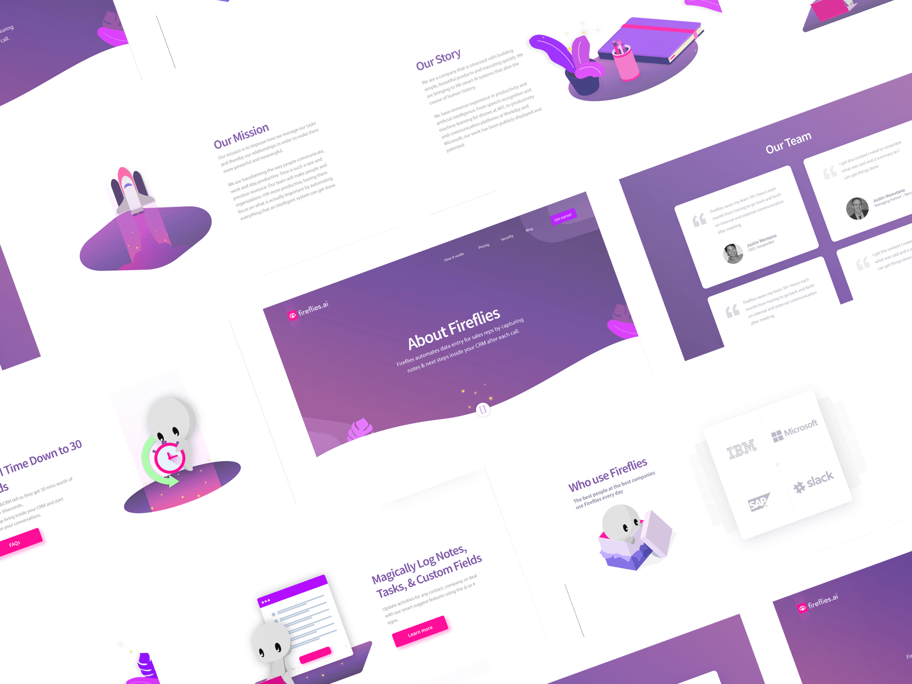
The Objective
Revisioning the interface, product, asset, branding, & website.
As a design intern at Fireflies.ai, the main objective of the position is to improve the company's
SaaS product user experience, user interface, website, branding, and assets that are consistent and
user friendly.
Research
Learning the business goals, competitors, and problems
Competitive analysis
I conducted a competitive analysis to grasp a better understanding of the company's competitors,
strengths, weaknesses, and potential opportunities that could be improved or changed when
redesigning the product. Through analysis, the three main competitors consisted of Drift, Cassette
2.0, Spext, and Rekk.
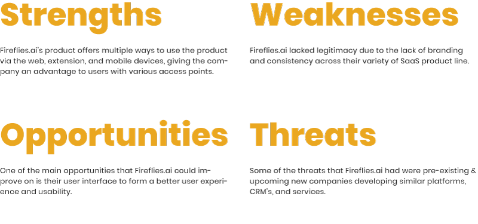
A quick S.W.O.T analysis
Fireflies.ai competitor list
User Feedback
The company had multiple departments that contributed to gathering user feedback from clients and
customers based on the various design iterations I've developed. From there, specific departments
would provide me data, client & user feedback, and changes that needed to either be iterated or
improved upon the initial designs.
“The text was too light and quite hard to read or notice; scannability and clarity are much easier
to read and go through.”
Lack of trust & legitimacy among users
The lack of branding in its early stages caused a lot of inconsistency and confusion across multiple
SaaS platforms offered to customers. Within the various products that Fireflies.ai offered either
consisted of different colors, text, and layout, which prompts questioning of the company's
legitimacy among users and the differentiating against other competing products in the market.
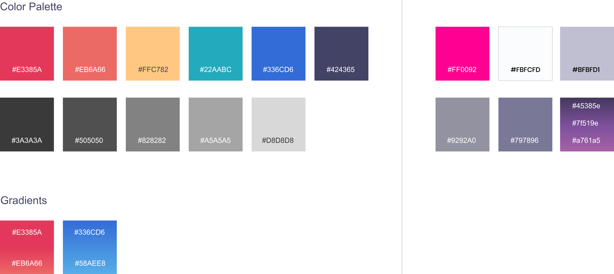
Left old previous branding colors. Right new branding colors.
Strenuous transcript readability and scannability
Voice recordings made through Fireflies.ai are automatically transcribed into transcripts where
users could digest information on mobile or web devices. The initial transcript design had a very
basic document structure of plain text making it hard for users to digest and take notes on
important key points and conversations made during that specific meeting.
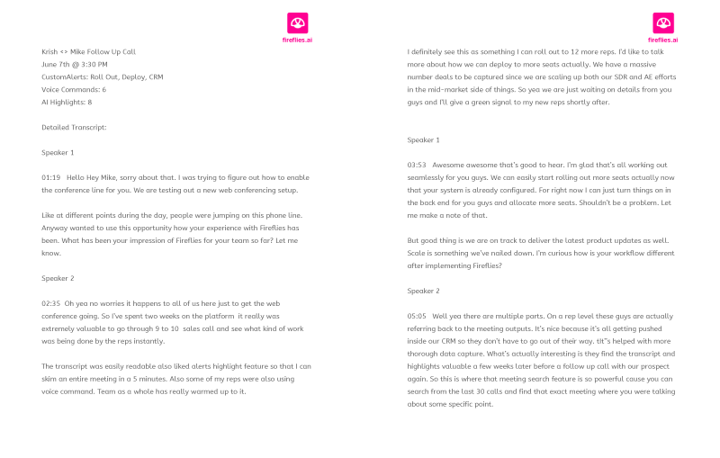
Old transcript sample output.
Lacking visibility & affordances on chrome extension
Fireflies.ai chrome extension’s initial design gravely lacked the necessary visibility & proper
affordances to generate ease of usability and accessibility among users. Buttons were hidden,
missing, or out of the ordinarily expected placement leading to a complicated learning curve and
user experience.
Complicated landing page
The company's landing page navigability was sophisticated and confusing for many new users. It
lacked branding and unity in assets that would help set the company apart from other products in the
market. Poor user flow, hierarchy, and layout design also led to fewer customers and conversion
rates.
Strategy Plan
Understanding users to redesign Fireflies’s product and branding.
User stories
The development of user stories came from other departments given to me for a better grasp of
insight, understanding, and approach of who I’m explicitly designing for. It also helps break down
and explains the importance of understanding my users who, what, and why the needs of this
particular SaaS product.
User Flow
Laying out the original SaaS product user flow brings clarity and vision on what current problems,
friction, and tension exists. I redesigned the user flow by taking out and implementing new sections
and pages that could hypothetically improve and enhance user experiences for the extension, email,
and website redesign.
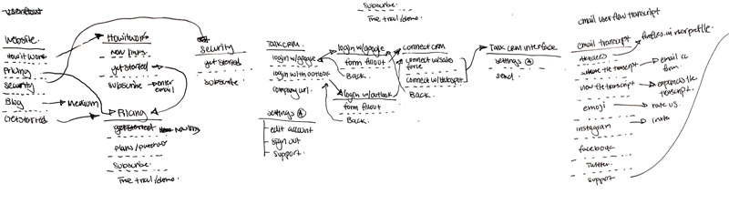
3 out of 15 iteration user flow for website, extension, and transcript
Researching users and defining targeted user audiences
When I boarded as a design intern at Fireflies.ai, an extensive amount of research, vision, and
goal, the company had previously researched on was debriefed to me by the CEO & Co-Founder. It gave
me a better perspective about who my audiences are that I would be designing for. Several
user-targeted groups consist of Finance, Legal, & Education user markets.
discover
Exploring different creative solutions, design layouts, and branding.
Brainstorm & Sketch
Meetings were frequent during my time at Fireflies.ai. We would have 1-2 meetings every week to
discuss new changes, features, development, and progress made from each department. During these
meetings, I would explain the proposed design changes, new features, and potential product
improvements. Often, I would receive feedback and critique from other departments on what changes,
enhancements, or iterations could be made to create a better user experience.
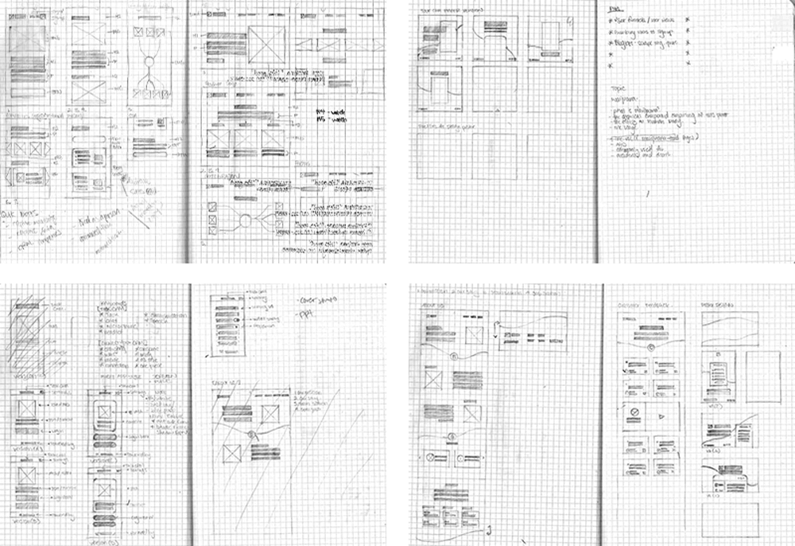
Sitemap
I created a sitemap for the company's landing page, about page, and customer feedback page to
visually see and potential design changes made to improve and enhance its user experiences.
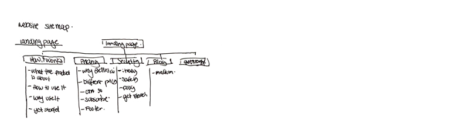
Wireframes
Wireframes were developed after approvals from earlier stages of discussions, brainstorming,
sketches, and sitemaps that have been agreed upon by the CEO. During the wireframing process,
multiple iterations and design changes were made based on rapid user testing, feedback, and research
conducted by other departments.
Left mobile wireframe. Right website wireframe.
Prototype
A higher fidelity prototype was created based on iterations, changes, and improvements made during
the wireframing process. The prototype mockups were created for user testing on actual clients to
gain better insights and feedback for improving the product's user experiences. Again the conducted
research, learnings, and data information collected were given to me to understand better what
improvements were to be made on the mockups.
User testing results & insights
From the given conducted user research and data, I've learned that drastic iterations and
improvements were necessary on several different projects. The email redesign lacked color contrast
as clients had found it hard to distinguish between the two texts within the same line. On the
website mockup redesign, feedbacks were given that it needed change and improvements of the overall
visual hierarchy on several different pages. As for the extension mockup, improvements were needed
in areas where user interactions aren't prominent or accessible, which was disrupting the product
user experience.
The solution
Redesigning & unifying all application interfaces to create a cohesive and delightful user
experience.
Rebranding Fireflies.ai color scheme
I worked on reshaping the company's color scheme by simplifying the number of colors from the
previous palette to unify a consistent rhythm, pattern, and identity across its software
applications. Working closely with the Founders exploring different possibilities and iteration
from a list of multiple proposed color palettes was essential in the decision-making process.
Branding helps set company language and differentiation in the market.
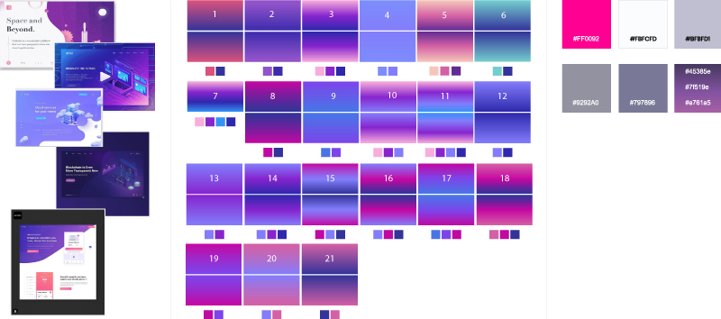
Moodboard | Color iterations | Final color descisions
Improving the transcript usability and scannability
To improve the transcript scannability, I redesigned the document by improving its hierarchy,
contrast, spacing, and separation to emphasize valuable information and visibility to users. The
redesign incorporated colors to help differentiate between important and unimportant information
within a paragraph, sentence, or article. Contrast also helped improve reader scannability and
user attention by alleviating the strenuous work of reading through a block of text. Hierarchy,
spacing, and separation also improve user experiences by leading the eye with focus and
differentiation of importance between blocks of text and sections of contents.
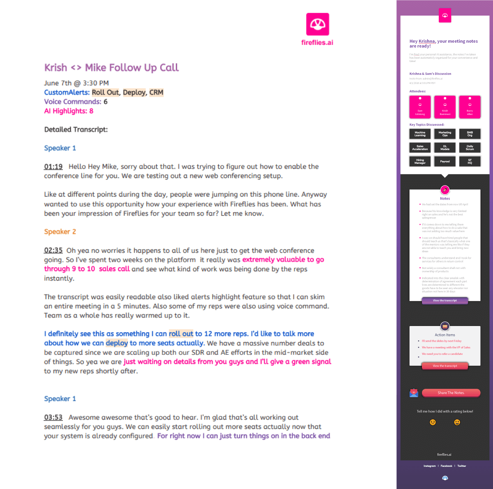
Transcript design for Fireflies.ai
Redesigning the extension
The redesign extension process started with creating a product specification defining what
features is needed for the newly designed application. Understanding user flow was also an
essential area in developing the sketches and wireframes for user testing. With the redesign, I
focused on improving the usability of the product by designing buttons that's easily
discoverable and visible to users increasing the success chance of users reaching their intended
goals. Contrast, hierarchy, colors, and other design elements were also incorporated to improve
the visual readability and user experiences. Further improvements and iterations were made based
on validation of client feedback and user testing conducted by other departments.
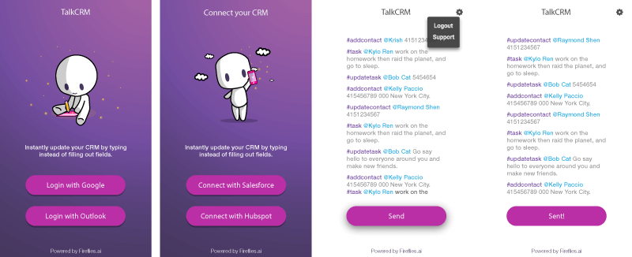
Redesigning the website
Redesigning the landing page for Fireflies.ai started with creating sitemaps to visually help
define, improve, and resolve any friction or pot-holes on the existing landing page. During this
project, I was assigned to work directly with a senior designer to help supply any assets or
branding materials needed for the redesign of the landing page.
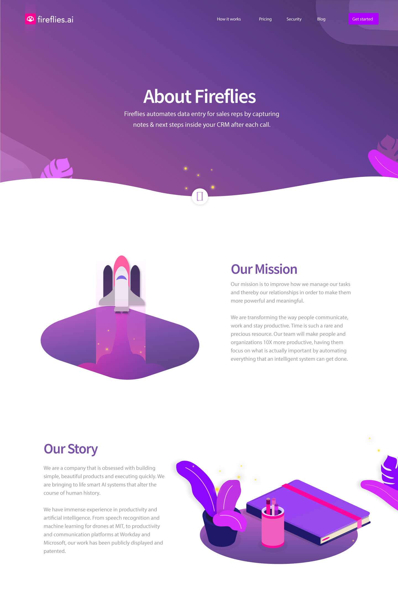
Asset design credits goes to: Satyaji
Designed marketing ads & company presentation decks
I approached designing the marketing materials, pitch decks, and templates by the understanding
of who my user-targeted audiences were. Pitch decks, templates, and marketing materials were
designed based on the newly rebranded color palette to instill the company's new branding
identity.
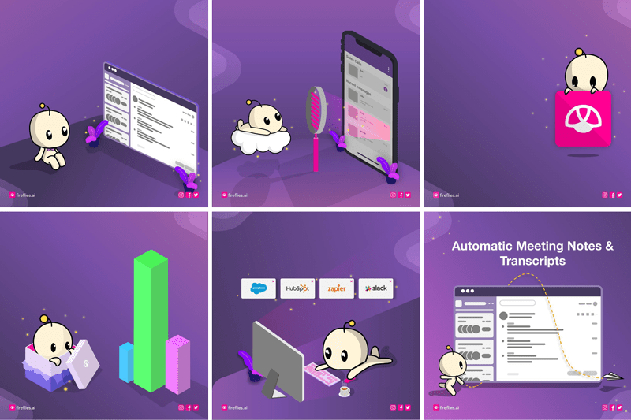
6 out of 9 templates currently displayed
Design
Redesigned branding, presentation, interface, and websites for Fireflies.ai
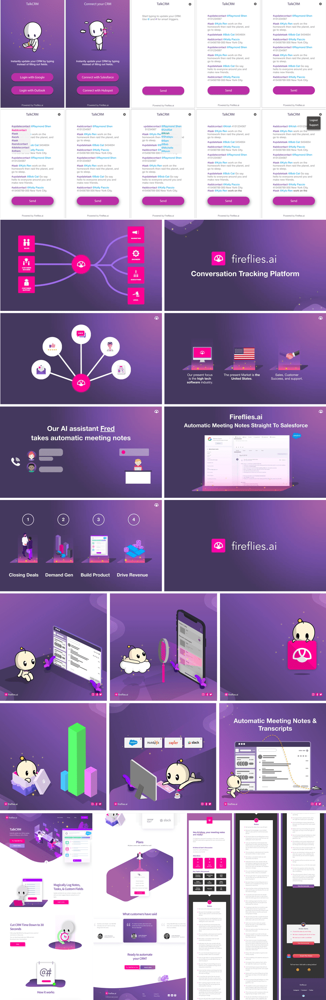
Some of the assets & layouts were designed by Satyaji
key learnings
What I’ve learned throughout my internship at Fireflies.ai.
My experiences and learnings @ Fireflies.ai
Fireflies.ai is my first company and internship I've worked at as a designer during my second
year of college. I was responsible for most of the company's foundational redesign and
development of their branding & products.
During my internship, I learned a lot in the first two months working alongside different
departments by understanding the importance and contribution they make in meeting the project's
deadline. In the early stages, I struggled a bit in getting used to the workflow, daily
meetings, and showcasing design works and changes I've made for the project. But over time, I
overcame that struggle and anxiety from proposing, presenting, and explaining my design changes
in front of multiple departments within the company. I also learned a lot from working on
numerous design projects such as designing: pitch decks, marketing material/template, website,
email, transcript, chrome extension, and HTML & CSS development.
Throughout my internship experiences at Fireflies.ai, I had learned and gained a lot of
different skills and knowledge from working at a SaaS start-up company. I gained a lot of
insights and experiences as a designer as I had the chance to work with multiple departments
with various work processes, delivery systems, and communication processes. It has also improved
my career and profession as a designer by understanding how to manage and approach numerous
design projects and problems that I had never worked on at hand. Overall, the main takeaways
I've gained working at Fireflies.ai as an intern was:
Understanding the business roadmap, workflow, and operations to efficiently work
around and deliver projects to meet deadlines and product launch dates.
Communication between departments, gathering feedback, and understanding their
role was vitally important to stay on track and on task to meet deadlines.
I've learned that managing and working on multiple project design requires a
different design approach by adhering to the product specs and an understanding
of the development side when redesigning a product interface.